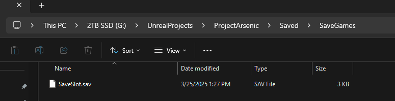
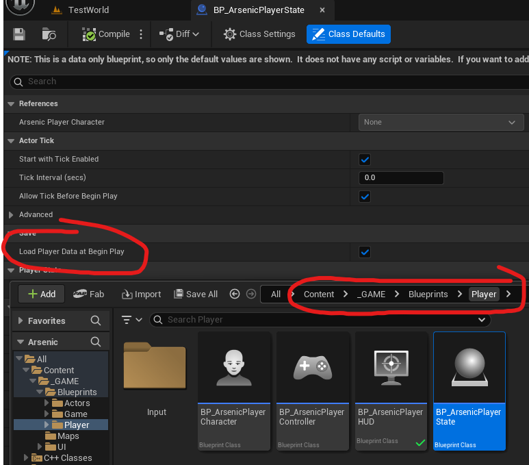

Saving & Loading
This documentation provides an overview of the save system, examples of how to save and load data with actual game objects, and checkpoint functionality in the Arsenic game project.
Overview
The save system utilizes structs to store large amounts of data per-object. Structs can be defined in the .h file of the object that requires saving — like in the player state:
USTRUCT(BlueprintType)
struct FPlayerSave : public FTableRowBase
{
GENERATED_BODY()
public:
UPROPERTY(EditAnywhere, BlueprintReadWrite, Category = "Settings")
FTransform PlayerTransform;
UPROPERTY(EditAnywhere, BlueprintReadWrite, Category = "Settings")
FRotator PlayerControlRotation;
UPROPERTY(EditAnywhere, BlueprintReadWrite, Category = "Settings")
float PlayerHealth;
FPlayerSave() :
PlayerTransform(FTransform(FRotator::ZeroRotator, FVector::ZeroVector, FVector(1.0f))),
PlayerControlRotation(FRotator::ZeroRotator),
PlayerHealth(-1.f)
{}
};
UArsenicSaveGameObject will need to include a tremendous number of header files and variables of each object’s save struct type.
This only affects compile times, not runtime optimization.
When creating your own savable object, make sure to add the struct as a variable in the save game object:
UCLASS()
class ARSENIC_API UArsenicSaveGameObject : public USaveGame
{
GENERATED_BODY()
public:
UPROPERTY(VisibleAnywhere, BlueprintReadWrite, Category = "Save")
FAudioSave AudioData;
UPROPERTY(VisibleAnywhere, BlueprintReadWrite, Category = "Save")
FGraphicsSave GraphicsData;
UPROPERTY(VisibleAnywhere, BlueprintReadWrite, Category = "Save")
FPlayerSave PlayerData;
UPROPERTY(VisibleAnywhere, BlueprintReadWrite, Category = "Save")
FCharacterAttributes PlayerAttributes;
UPROPERTY(VisibleAnywhere, BlueprintReadWrite, Category = "Save")
FControlsSave ControlsData;
UPROPERTY(VisibleAnywhere, BlueprintReadWrite, Category = "Save")
FPylonStateSave PylonStateData;
UPROPERTY(VisibleAnywhere, BlueprintReadWrite, Category = "Save")
TMap<FName, FDoorSave> DoorData;
};
The UArsenicSaveGameSubsystem and IArsenicSaveGameInterface will need functions to set the struct on the save game object — essentially just updating it with new data. This is discussed further below.
Notes for Non-Programmers
- It is entirely possible that save data will create strange or buggy behavior. You can safely delete save data by locating the save file in the project directory:

- BP_PlayerState has a checkbox that stops the player character’s saved data from being loaded when the game starts. By default it’s set to true but you may want to avoid loading it for one reason or another:

Classes
UArsenicSaveGameSubsystem
Manages game-wide save data, general settings, and persistence. It is responsible for loading and saving game data asynchronously and tracking the state of objects as World Partition loads and unloads them.
This is the central hub that controls the physical saving and loading of data in the game.
You can access the subsystem from any class by using its static Get function and passing in a world context object:
IArsenicSaveGameInterface
An organizational tool that stores the functions the game instance uses to save and load the various data in the game. This also ensures programmers don’t have to constantly cast to the save game subsystem and instead
can call interface functions by using Execute_FUNCTION_NAME as shown below:
void AArsenicCheckpoint::OnTriggerBoxBeginOverlap(UPrimitiveComponent* OverlappedComponent,
AActor* OtherActor,
UPrimitiveComponent* OtherComp,
int32 OtherBodyIndex,
bool bFromSweep,
const FHitResult& SweepResult)
{
if (OtherActor != UGameplayStatics::GetPlayerCharacter(this, 0)) return;
UArsenicSaveGameSubsystem* SaveSubsystem = UArsenicSaveGameSubsystem::Get(this);
if (!SaveSubsystem) return;
if (!SaveSubsystem->CanSave) return; // helps prevent an unintentional save when the player transform is updated at begin play
IArsenicSaveGameInterface* SaveGameInterface = SaveSubsystem;
FetchSaveData();
SaveGameInterface->Execute_SetPlayerSaveData(SaveSubsystem, PlayerSaveData);
SaveGameInterface->Execute_SetPlayerAttributes(SaveSubsystem, PlayerAttributes);
SaveGameInterface->Execute_SetPylonSaveData(SaveSubsystem, PylonSaveData);
SaveGameInterface->Execute_SetDoorSaveData(SaveSubsystem, SaveSubsystem->CollectedDoorData);
SaveGameInterface->Execute_SaveGameData(SaveSubsystem);
}
This interface will need to be updated every time a new savable object is created, and its function will need to be implemented in the UArsenicSaveGameSubsystem
UArsenicSaveGameObject
This is the container that all save data is stored in. Accessing this object will allow us to retrieve saved data, however it doesn’t have any functions of its own as of the time this documentation is written.
Retrieving variables from this object can be done by accessing the UArsenicSaveGameSubsystem and calling Execute_GetSaveGameData(SaveSubsystem) to retrieve the UArsenicSaveGameObject, then accessing
variables from that. An example is shown in the AArsenicPlayerState:
void AArsenicPlayerState::SetPlayerStateFromSaveData()
{
UArsenicSaveGameSubsystem* SaveSubsystem = UArsenicSaveGameSubsystem::Get(this);
UArsenicSaveGameObject* SaveGameObject = IArsenicSaveGameInterface::Execute_GetSaveGameData(SaveSubsystem);
if (SaveSubsystem->DoesSaveExist)
{
if (SaveSubsystem->SaveObjectInitialized)
{
FPlayerSave PlayerData = SaveGameObject->PlayerData;
ArsenicPlayerCharacter->SetActorTransform(PlayerData.PlayerTransform);
ArsenicPlayerCharacter->ArsenicPlayerController->SetControlRotation(PlayerData.PlayerControlRotation);
InitializeAttributes(SaveGameObject->PlayerAttributes);
}
else
{
if (BoundToDelegate) return;
SaveSubsystem->OnSaveGameObjectLoaded.AddDynamic(this, &ThisClass::OnSaveGameObjectLoaded_Callback);
BoundToDelegate = true;
}
}
else
{
FCharacterAttributes NewPlayerAttributes;
InitializeAttributes(NewPlayerAttributes);
}
}
AArsenicCheckpoint
This class is an example of how to save an object’s data. We will likely be using this object for a long time, and it will likely be growing as our savable objects are added to the game. The code is quite simple, I will let it speak for itself. It can be found in Actors->ArsenicCheckpoint. There is a blueprint version that gets added to the world as a checkpoint.
Loading Data
So far, the system only has two examples of loading data and that can be found in the AArsenicPlayerState and AArsenicDoorBase. Loading data is far simpler than you may expect so I won’t
explain it here, but it’s important to know where to find the examples: Player->AArsenicPlayerState & Actors->Interaction->Doors->ArsenicDoorBase. The doors are an excellent example of
tracking their state as World Partition loads and unloads them. I'm very proud of this feature!
Creating New Savable Objects
This is a very brief guide on the requirements to register your object with the save system:
- Within the header file of your savable object, create a struct that contains all necessary information.
- Add that struct as a variable to
UArsenicSaveGameObject(you will need to add the header file too) - Create a function in
IArsenicSaveGameInterfacethat takes your struct as an input - Implement that interface function in
UArsenicSaveGameSubsystem(use the other functionss as a guide). Ensure this function sets your struct on the save game object - Create a getter function in your savable object that returns your struct, but actually populates it with current data before doing so (this will be fetched by the checkpoint)
- Within
AArsenicCheckpoint, add toFetchSaveDataandOnTriggerBoxBeginOverlapto include your new functions. Feel free to create a member variable here for your struct if you need it - On
BeginPlayin your savable object, create logic that sets the state of your object back to the loaded data. You may needSetActorTransform,SetActorRotation,SetHealth, etc. This is where the savable object actually uses the saved data that gets loaded. There is a bool on theUArsenicSaveGameSubsystem(SaveObjectInitialized) that gets set to true when the save game object is loaded; use this if you want to ensure the save game object is actually initialized before accessing it.
Helfup Tip For Accessing Save Data
Because objects get initialized at different times, it’s important that we access objects only after they’ve been fully initialized. The UArsenicSaveGameSubsystem initializes the
UArsenicSaveGameObject that holds all the saved data, and as such has a delegate that gets broadcast when that happens, called FOnSaveGameObjectLoadedDelegate. This works in tandem with the
bool on the game instance called SaveObjectInitialized. For example:
void AArsenicPlayerState::SetPlayerStateFromSaveData()
{
UArsenicSaveGameSubsystem* SaveSubsystem = UArsenicSaveGameSubsystem::Get(this);
UArsenicSaveGameObject* SaveGameObject = IArsenicSaveGameInterface::Execute_GetSaveGameData(SaveSubsystem);
if (SaveSubsystem->DoesSaveExist)
{
if (SaveSubsystem->SaveObjectInitialized)
{
FPlayerSave PlayerData = SaveGameObject->PlayerData;
ArsenicPlayerCharacter->SetActorTransform(PlayerData.PlayerTransform);
ArsenicPlayerCharacter->ArsenicPlayerController->SetControlRotation(PlayerData.PlayerControlRotation);
InitializeAttributes(SaveGameObject->PlayerAttributes);
}
else
{
if (BoundToDelegate) return;
SaveSubsystem->OnSaveGameObjectLoaded.AddDynamic(this, &ThisClass::OnSaveGameObjectLoaded_Callback);
BoundToDelegate = true;
}
}
else
{
FCharacterAttributes NewPlayerAttributes;
InitializeAttributes(NewPlayerAttributes);
}
}
If SaveObjectInitialized returns false, that means the game instance hasn’t fully initialized our save game object and we cannot safely access the saved data. Instead (else), we simply
bind to the OnSaveGameLoaded delegate which re-calls SetPlayerStateFromSaveData when the game instance broadcasts that it has successfully initialized the save game object. Here’s the callback for
reference: